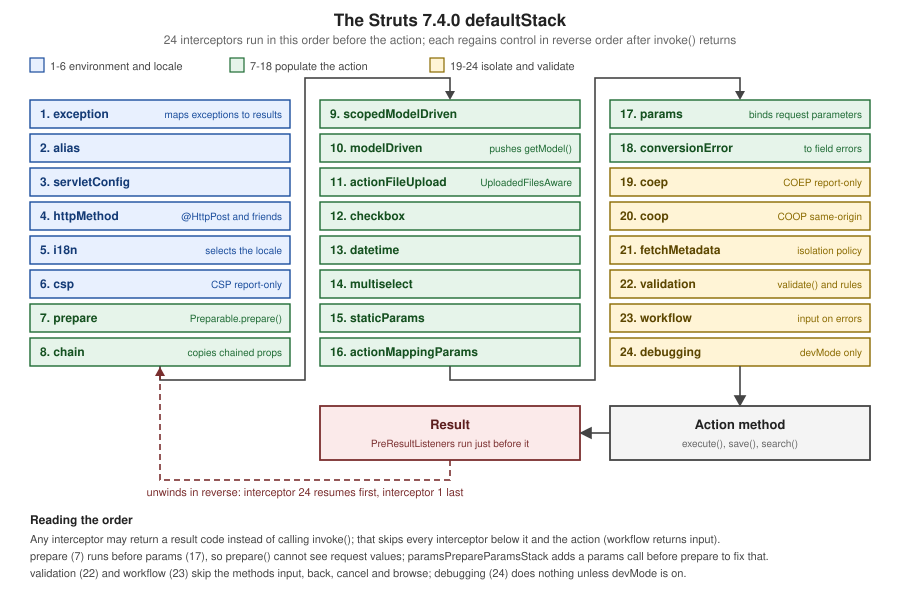

Interceptors
|
This content was generated with the assistance of AI and should be verified against the official documentation before being relied on in production. |
This page is written against Apache Struts 7.4.0 (released 2026-10-02) running on Apache Tomcat 11.0.26 and Java 21, the
combination that every example was built, deployed and requested on; the facts were checked on 2026-10-08 against the
struts-default.xml and default.properties files inside the 7.4.0 struts2-core jar, the Javadoc of the interceptor
classes and the Core Developer Guide pages on https://struts.apache.org/core-developers/. Interceptors are the part of
Struts where the work happens. A request that reaches an action does not call the action method directly: the
framework wraps the call in a stack of interceptors that handle exceptions, select the locale, copy request parameters
onto the action, convert and validate them, add security headers and decide whether the action runs at all, and the same
interceptors get a second turn after the action and result have finished. The running scenario is the Bookshelf, a
catalogue of books exposed as Struts actions; this page uses it to print the real stack, to show where prepare() sees
request values and where it does not, to exclude a method from validation, and to watch the nesting of two interceptors
around the action. The neighbouring pages are architecture and request lifecycle, actions, results, exception handling and custom interceptors.
What an Interceptor Is
An interceptor is a stateless class that follows the interceptor pattern known from servlet filters and from aspect
oriented programming. The Javadoc of org.apache.struts2.interceptor.Interceptor describes it as an object that
dynamically intercepts action invocations, may run code before and after the action, and may prevent the action from
running. The interface has three methods, and the abstract base class that nearly every interceptor extends adds one
more:
| Member | Role |
|---|---|
|
Called once when the interceptor instance is created and when the framework shuts down; the place for expensive set-up |
|
The work. Calling |
|
Implements |
|
The state of one request: |
|
A callback |
Source: Struts Javadoc — Interceptor
Because one instance serves every request of the actions that reference it, an interceptor must not keep request state
in fields. Configuration values (the <param> elements) arrive as setter calls when the stack is built, once per
interceptor-ref, which is why two references to the same interceptor class can carry different settings; the
Bookshelf example below uses that to run two instances of one tracing interceptor, labelled outer and inner.
The Core Developer Guide states the point of the pattern: most of the framework’s own functionality (type conversion, object population, validation, file upload, page preparation, double-submit guards) is implemented as interceptors, and each one is pluggable, so an action gets exactly the features its stack lists. The default stack is designed for most applications, and most applications never need to change it.
The Bookshelf Used on This Page
All examples below are classes and mappings of one WAR, g8icp.war, deployed under the context path /g8icp on
Tomcat 11.0.26. It is the Struts Bookshelf of the Struts Getting Started page of this section (the Struts BOM
org.apache.struts:struts2-bom:7.4.0 imported in dependencyManagement, struts2-core, the Servlet and Pages APIs with
scope provided, StrutsPrepareAndExecuteFilter mapped to /*) with extra actions added for the experiments. Every
action URL below uses the default extension .action (the constant struts.action.extension defaults to
action,,). Imports and package lines are left out of the listings; the package is org.example.bookshelf.
| Class | Mapping | Concept |
|---|---|---|
|
|
An action with no |
|
|
Prints the interceptors the framework built for the mapping, in order |
|
(interceptor), |
Records |
|
|
|
|
|
|
|
|
What |
|
|
An action restricted to |
|
|
A three second action behind |
Configuring Interceptors in struts.xml
Five elements configure interceptors, all inside a <package>:
| Element | Meaning |
|---|---|
|
Container element in a package for the declarations below |
|
Registers an interceptor class under a short name; optional |
|
Bundles |
|
Uses an interceptor or a stack, in an action (or inside a stack); |
|
Names the stack used by every action of the package that has no |
Interceptors and stacks can be mixed in any order, and the framework invokes them in the order in which they are
defined. The central rules follow from how struts-default.xml is built, and the Bookshelf demonstrates each of them.
-
The abstract package
struts-defaultregisters the 38 built-in interceptors, 11 stacks, the result types, the default action classorg.apache.struts2.ActionSupportand<default-interceptor-ref name="defaultStack"/>. A package that does notextends="struts-default"(directly or through another package) has none of these names, and must register interceptors itself. -
An action with no
interceptor-refgets the package’s default stack, which isdefaultStackunless adefault-interceptor-refsays otherwise. -
An action with its own
interceptor-refelements gets only those. It does not getdefaultStackon top: the Getting Started tutorial on interceptors says so plainly: once an action names interceptors, only those run. An action that liststimerandloggeralone loses validation and parameter binding. Add<interceptor-ref name="defaultStack"/>as the last reference to keep them. -
Stacks and interceptors declared in one package are visible in every package that extends it, which is why a
default-interceptor-refin a child package can point to a stack declared in its parent.
An Action That Uses the Default Stack
The first Bookshelf mapping has no interceptor reference. The page books.jsp prints the filter property, which the
params interceptor sets from the request.
<package name="default" extends="struts-default" namespace="/">
<action name="books" class="org.example.bookshelf.BookAction">
<result>/WEB-INF/views/books.jsp</result>
</action>
</package>public class BookAction extends ActionSupport {
private String filter;
public String getFilter() {
return filter;
}
@StrutsParameter
public void setFilter(String filter) {
this.filter = filter;
}
public List<String> getTitles() {
return List.of("Dune", "Neuromancer");
}
}A request with the parameter filter=Dune returns <p>Filter: Dune</p>, so the parameter reached the action through the
interceptors and nothing in the action mentions them. Without the annotation @StrutsParameter on the setter the value
would be dropped by the same interceptor, because 7.x requires it (parameter injection has its own page in this
section).
Seeing the Stack the Framework Built
An action can ask the framework which interceptors it built for the current mapping. This StackAction is used by all
the stack experiments of this page; it walks ActionConfig.getInterceptors() through the current ActionInvocation.
public class StackAction extends ActionSupport {
public String getLocaleName() {
return getLocale().toString();
}
public List<String> getInterceptorNames() {
List<InterceptorMapping> mappings = ActionContext.getContext()
.getActionInvocation().getProxy().getConfig().getInterceptors();
return mappings.stream().map(InterceptorMapping::getName).toList();
}
}The page stack.jsp iterates the list with <s:iterator value="interceptorNames" status="st">. Mapped without any
interceptor-ref (stack-default.action), the response on Tomcat 11.0.26 was:
1 exception
2 alias
3 servletConfig
4 httpMethod
5 i18n
6 csp
7 prepare
8 chain
9 scopedModelDriven
10 modelDriven
11 actionFileUpload
12 checkbox
13 datetime
14 multiselect
15 staticParams
16 actionMappingParams
17 params
18 conversionError
19 coep
20 coop
21 fetchMetadata
22 validation
23 workflow
24 debuggingdefaultStack in Order
The list above is the contents of defaultStack in Struts 7.4.0, read at runtime and checked against the
<interceptor-stack name="defaultStack"> element of the struts-default.xml inside struts2-core-7.4.0.jar. Order
matters: each interceptor runs before the ones below it and sees the effects of the ones above it.

The table gives each position with the class that struts-default.xml binds to the name, what the interceptor does, and
the settings the stack itself passes to it. The settings are in the XML of the stack and appear as <param> children.
| # | Name | What it does | Parameters set by the stack |
|---|---|---|---|
1 |
|
Catches an exception, maps it to a result through |
none |
2 |
|
Copies the value of one named parameter to a property of another name, driven by an |
none |
3 |
|
Injects the request, response, session map, application map and the like into actions that implement the |
none |
4 |
|
Rejects a request whose HTTP method is not allowed by |
none |
5 |
|
Selects and remembers the locale from the |
none |
6 |
|
Sends the |
|
7 |
|
Calls |
none |
8 |
|
Copies the properties of the objects already on the value stack (the previous action of a chain) to this action |
none |
9 |
|
For a |
none |
10 |
|
For a |
none |
11 |
|
Passes uploaded files to an |
none |
12 |
|
Adds |
none |
13 |
|
Handles the parameters of |
none |
14 |
|
Adds an empty value for a multi-valued field with no selection, using |
none |
15 |
|
Sets the |
none |
16 |
|
Like |
none |
17 |
|
Applies the request parameters to the action through the value stack and OGNL, subject to name, value and |
none |
18 |
|
Turns type conversion errors from the action context into field errors and remembers the original text |
none |
19 |
|
Cross-Origin Embedder Policy header, |
|
20 |
|
Cross-Origin Opener Policy header, |
|
21 |
|
Resource isolation policy over the |
|
22 |
|
Runs |
|
23 |
|
Returns the |
|
24 |
|
Provides the |
none |
Four consequences of that order matter in day-to-day work:
-
exceptionis first, so an exception thrown by any interceptor below it, includingparamsandvalidation, is mapped to a result. Anything placed above it in a custom stack is not protected. -
prepare(7) runs beforeparams(17). IndefaultStack,prepare()therefore sees an action whose properties have not been set yet. The Bookshelf experiment below shows the consequence, andparamsPrepareParamsStackis the standard cure. -
modelDriven(10) runs beforeparams(17), so that the model thatmodelDrivenpushes on the stack is the object the request parameters are applied to. The Model Driven page says the same: it must come before bothstaticParamsandparamsif the parameters are to reach the model. -
validation(22) andworkflow(23) come after everything that sets values, and both skip the methodsinput,back,cancelandbrowse.
A defaultStack printed in a book or an older blog post is shorter and in a different order (it has no httpMethod,
csp, coep, coop or fetchMetadata); the section "Where the Books Are Outdated" gives the details.
Every Built-in Interceptor
struts-default.xml of 7.4.0 registers 38 interceptors. Their names are the keys for interceptor-ref; the class
column is the class that the XML binds to the name. The "In stacks" column lists the built-in stacks (next section) that
reference the interceptor. The Core Developer Guide has one page per interceptor with the same name plus
-interceptor (for example parameters-interceptor), and the sections after the table follow those pages.
| Name | Class (package org.apache.struts2.interceptor unless shown) |
In stacks (direct references) |
|---|---|---|
|
|
|
|
|
|
|
|
|
|
|
none |
|
|
|
|
|
|
|
|
none |
|
|
|
|
|
|
|
|
none |
|
|
none |
|
|
|
|
|
none |
|
|
|
|
|
|
|
|
|
|
|
|
|
|
|
|
|
|
|
|
|
|
|
|
|
|
none |
|
|
|
|
|
|
|
|
|
|
|
none |
|
|
|
|
|
|
|
|
none |
|
|
none |
|
|
|
|
|
|
|
|
|
|
|
none |
|
|
none |
|
|
none |
|
|
|
|
|
|
Four names appear in the Core Developer Guide table or in tutorials and are not available in 7.4.0:
| Name | What the documentation says | What 7.4.0 does |
|---|---|---|
|
Logs how long an action takes; its page is marked deprecated, and the Getting Started tutorial on interceptors still references it |
Not in |
|
Deprecated since Struts 6.4.0 and removed in 7.0.0, according to its page |
Not registered; use |
|
Filters parameters by prefix, with |
Not registered; no class in the jar. Use |
|
Annotation based version of |
Not registered; no class in the jar |
Hyphenated names such as model-driven and static-params were converted to camel case in Struts 2.0.7, and the old
spellings were kept as aliases only until 2.1.0. The current names are modelDriven, staticParams and so on;
writing the hyphenated name is an error in 7.4.0.
The Built-in Stacks
struts-default.xml declares eleven stacks. The contents of basicStack, paramsPrepareParamsStack and defaultStack below are as printed by the
StackAction (the first and the last were also compared with the XML); the other stacks only combine them and are
taken from the XML.
| Stack | Contents in order | Use |
|---|---|---|
|
|
Actions that need no parameters or services, for example stateless JSON endpoints |
|
|
The core without locale, security headers, validation or models; the base of the next five stacks |
|
|
Basic plus validation |
|
|
File upload with the 6.4 interceptor |
|
|
|
|
|
The target of an action chain |
|
|
Locale switching |
|
|
Load an object in |
|
The 24 interceptors of the previous section |
The stack of every package that extends |
|
|
The old name of the default stack, kept for existing references |
|
|
Long running actions with a wait page |
The basicStack and paramsPrepareParamsStack rows were confirmed with the StackAction mapped to
<interceptor-ref name="basicStack"/> (ten entries) and to <interceptor-ref name="paramsPrepareParamsStack"/> (nineteen
entries, with params at positions 7 and 16). The page of the Core Developer Guide for the default configuration says
that executeAndWait is configured in struts-default.xml but is not part of any of the default stacks, and that it
must be the last interceptor; executeAndWaitStack is the shipped answer and wraps defaultStack between two
references to it.
Worked Example: prepare() and the paramsPrepareParams Stack
The Bookshelf’s PreparedBookAction implements Preparable. It receives a book id, and its prepare() method loads the
book for that id. Since 7.2.0 Preparable.prepare() is a default method with an empty body, so an action that uses only
prepareEdit() style methods no longer has to override it; this action overrides it.
public class PreparedBookAction extends ActionSupport implements Preparable {
private static final Map<Integer, String> CATALOGUE = Map.of(1, "Dune", 2, "Neuromancer");
private int id;
private String idSeenByPrepare = "not called";
private String loaded = "nothing loaded";
public int getId() {
return id;
}
@StrutsParameter
public void setId(int id) {
this.id = id;
}
@Override
public void prepare() {
idSeenByPrepare = String.valueOf(id);
loaded = CATALOGUE.getOrDefault(id, "nothing loaded");
}
public String getIdSeenByPrepare() {
return idSeenByPrepare;
}
public String getLoaded() {
return loaded;
}
}Two mappings point at the same class. The first uses the inherited defaultStack; the second selects
paramsPrepareParamsStack.
<action name="prepared-default" class="org.example.bookshelf.PreparedBookAction">
<result>/WEB-INF/views/prepared.jsp</result>
</action>
<action name="prepared-ppp" class="org.example.bookshelf.PreparedBookAction">
<interceptor-ref name="paramsPrepareParamsStack"/>
<result>/WEB-INF/views/prepared.jsp</result>
</action>Requesting both with ?id=2 produced these two lines on Tomcat 11.0.26:
/prepared-default.action?id=2 -> idSeenByPrepare=0 id=2 loaded=nothing loaded
/prepared-ppp.action?id=2 -> idSeenByPrepare=2 id=2 loaded=NeuromancerIn defaultStack prepare() ran when id was still 0, then params set id to 2 (the final id=2 shows that the
value did arrive), so the book was never loaded. In paramsPrepareParamsStack the first params set id before
prepare(), so the lookup worked, and the second params (position 16) then applies the remaining parameters, such as
book.title, to the object that prepare() loaded. The stack’s own comment explains the trick: loading the parameters
twice lets prepare() retrieve the object that the second params call fills in. The price is that the parameters are
bound twice, so setters must be idempotent, and every parameter reaches the action before prepare() has had a chance to
authorise or load anything.
Parameters and Overriding
Every <interceptor-ref> accepts <param> children, and every <interceptor> element accepts them as defaults. The
Core Developer Guide documents three ways to override the parameters of an interceptor that lives inside a stack:
-
Copy the whole stack into the action and put the
<param>in the one reference ("method 1"). -
Reference the stack and use the dotted form
interceptor.property: the word before the dot is the interceptor name in the stack, the word after it is the property ("method 2"). -
Define a new stack in
<interceptors>that references the stack with dotted parameters, and make it thedefault-interceptor-refof the package ("method 3").
<!-- method 2: dotted names address interceptors inside the referenced stack -->
<action name="myAction" class="myActionClass">
<interceptor-ref name="defaultStack">
<param name="validation.excludeMethods">myValidationExcludeMethod</param>
<param name="workflow.excludeMethods">myWorkflowExcludeMethod</param>
</interceptor-ref>
</action>
<!-- method 3: a package-wide stack built from defaultStack -->
<interceptors>
<interceptor-stack name="parentStack">
<interceptor-ref name="defaultStack">
<param name="params.excludeParams">token</param>
</interceptor-ref>
</interceptor-stack>
</interceptors>
<default-interceptor-ref name="parentStack"/>Overrides are not inherited from one level to the next. The guide’s example: if a stack sets defaultBlock for an
interceptor and an action that references that stack sets allowed for the same interceptor, only allowed is
overridden for that action and the other parameters are null. Set every parameter you want at the level of the
interceptor-ref that the action uses.
Overriding params.excludeParams Replaces the Built-in List
The params interceptor ignores parameters whose names match a list of regular expressions. The Core Developer Guide
says that the stacks defined by Struts already exclude dojo..*, ^struts..*, ^session..*, ^request..*,
^application..*, ^servlet(Request|Response)..* and parameters...*, and its own example adds one name by repeating
the whole list followed by the new entry. The Bookshelf checks what a short value does. ProbeAction has two nested
holder objects named request and shelf; each holder has a setter annotated with @StrutsParameter, and each is
reached through a getter annotated with @StrutsParameter(depth = 1).
<interceptor-stack name="narrowParamsStack">
<interceptor-ref name="defaultStack">
<param name="params.excludeParams">^shelf\..*</param>
</interceptor-ref>
</interceptor-stack>
<action name="probe-default" class="org.example.bookshelf.ProbeAction">
<result>/WEB-INF/views/probe.jsp</result>
</action>
<action name="probe-narrow" class="org.example.bookshelf.ProbeAction">
<interceptor-ref name="narrowParamsStack"/>
<result>/WEB-INF/views/probe.jsp</result>
</action>Requesting ?request.value=X&shelf.value=Y returned:
/probe-default.action?request.value=X&shelf.value=Y -> request.value=untouched shelf.value=Y
/probe-narrow.action?request.value=X&shelf.value=Y -> request.value=X shelf.value=untouchedWith the stock configuration request.value is dropped by the built-in ^request..* pattern. With the override, the
one pattern replaced the list: shelf.value is now dropped and request.value reaches the action. A custom
excludeParams that does not repeat the defaults silently removes protection against parameters that try to reach
request, session, application and struts objects. Leave the list alone and add checks elsewhere (@StrutsParameter,
ParameterNameAware) unless you repeat all the defaults.
Disabling an Interceptor
Since Struts 6.1.0 any interceptor that extends AbstractInterceptor (all of the built-in ones do) accepts the
parameter disabled. With true its shouldIntercept returns false and the framework skips it. The Bookshelf uses
the parameter to turn off validation for one mapping without writing a new stack:
<action name="novalidate-*" class="org.example.bookshelf.BookEditAction" method="{1}">
<interceptor-ref name="defaultStack">
<param name="validation.disabled">true</param>
</interceptor-ref>
<result>/WEB-INF/views/edit.jsp</result>
<result name="input">/WEB-INF/views/edit.jsp</result>
<allowed-methods>save,search</allowed-methods>
</action>The result is shown with the other method filtering outputs below: novalidate-save.action without a title saved
(called=save()), and validate() never ran. Disabled is not available for an interceptor class that implements
Interceptor directly instead of extending AbstractInterceptor.
Lazy Parameters
An interceptor that implements WithLazyParams gets parameter values evaluated at invocation time, with the action as
the top object of the expression, instead of once when the stack is built. The configuration looks like
<param name="foo">${bar}</param>, written with the ${...} syntax; the framework resolves bar against the action on
every request. The mechanism was added in Struts 2.5.9, and in Struts 7.3.0 the interface became generic over a holder
(WithLazyParams<P extends InterceptorParams> with newLazyParams() and intercept(ActionInvocation, P)), so that the
values live in a per-invocation object, not in the shared interceptor instance. In 7.4.0 the built-in
actionFileUpload is the interceptor that uses it, to evaluate allowedTypes, allowedExtensions and maximumSize
per request (since 7.2.0).
<interceptor-ref name="actionFileUpload">
<param name="allowedTypes">${allowedContentTypes}</param>
<param name="maximumSize">${maxFileSize}</param>
</interceptor-ref>Method Filtering: includeMethods and excludeMethods
MethodFilterInterceptor is an abstract base class for interceptors that apply only to some methods of the action. It
adds two parameters: excludeMethods, a comma separated list of method names the interceptor skips, and
includeMethods, the names it applies to. A method in both lists is treated as included: includeMethods takes
precedence. A single * means all methods in either list. The Core Developer Guide lists four subclasses (token, token
session, default workflow and validation), but the 7.4.0 jar has eight: conversionError (since 2.5.2), execAndWait,
prepare and params also extend it, and actionMappingParams, tokenSession and the validation interceptors inherit it.
| Interceptor | Remarks |
|---|---|
|
|
|
|
|
Since 2.5.2 (class |
|
Skip |
|
Skip parameter binding for a method (since XWork 2.0.2) |
|
|
|
Skip the token check for a method |
|
Inherits the parameters through |
Worked Example: Searching Without Validation
The Bookshelf action BookEditAction has validate() (it rejects a blank title), a save() method that needs a title
and a search() method that does not. The mapping uses a wildcard so that edit-save calls save() and edit-search
calls search(). The mapping lists the two methods in <allowed-methods>, because struts-default.xml ships the
global allowed methods execute,input,back,cancel,browse,save,delete,list,index (the page on wildcards and strict
method invocation covers the rule), and search is not in that list.
public class BookEditAction extends ActionSupport {
private String title;
private String called = "";
public String getTitle() {
return title;
}
@StrutsParameter
public void setTitle(String title) {
this.title = title;
}
public String getCalled() {
return called;
}
@Override
public void validate() {
called += "validate() ";
if (title == null || title.isBlank()) {
addFieldError("title", "Title is required");
}
}
public String save() {
called += "save()";
return SUCCESS;
}
public String search() {
called += "search()";
return SUCCESS;
}
}<interceptors>
<interceptor-stack name="bookshelfStack">
<interceptor-ref name="defaultStack">
<param name="validation.excludeMethods">input,back,cancel,browse,search</param>
<param name="workflow.excludeMethods">input,back,cancel,browse,search</param>
</interceptor-ref>
</interceptor-stack>
</interceptors>
<action name="edit-*" class="org.example.bookshelf.BookEditAction" method="{1}">
<interceptor-ref name="bookshelfStack"/>
<result>/WEB-INF/views/edit.jsp</result>
<result name="input">/WEB-INF/views/edit.jsp</result>
<allowed-methods>save,search</allowed-methods>
</action>
<action name="plain-*" class="org.example.bookshelf.BookEditAction" method="{1}">
<result>/WEB-INF/views/edit.jsp</result>
<result name="input">/WEB-INF/views/edit.jsp</result>
<allowed-methods>save,search</allowed-methods>
</action>Requests on Tomcat 11.0.26; the page prints the called property, the field errors and the title:
/edit-save.action -> called=validate() errors={title=[Title is required]} title=
/edit-save.action?title=Dune -> called=validate() save() errors={} title=Dune
/edit-search.action -> called=search() errors={} title=
/plain-search.action -> called=validate() errors={title=[Title is required]} title=
/novalidate-save.action -> called=save() errors={} title=
/novalidate-save.action?title=Dune -> called=save() errors={} title=DuneRead the rows in pairs. In edit-save without a title validate() added the error, workflow saw it, returned
input and save() never ran (the action printed validate() only). In edit-search with the same empty title neither
interceptor ran, and search() executed. plain-search has the same action behind the stock defaultStack: search was
validated and rejected, which is the behaviour that the exclusion removes. novalidate-save shows the disabled
alternative: one interceptor turned off, the rest of the stack still running, so save() was called with a blank title.
The choice between excludeMethods and disabled is a matter of scope: excludeMethods leaves the interceptor active
for the methods you want, disabled removes it for the whole mapping.
Order of Execution, Nesting and PreResultListener
An interceptor’s code before invoke() runs in stack order, and its code after invoke() runs in the reverse order, so
a stack is a set of nested wrappers around the action and the result. The Core Developer Guide draws the nesting as
first, next, followed-by, last, action, last, followed-by, next, first and adds that interceptors implementing
PreResultListener (registered with addPreResultListener) run after the action and before the result. The Bookshelf
checks it with TraceInterceptor, a minimal interceptor that records what it sees; the page on custom interceptors
explains how to write one properly.
public class TraceInterceptor extends AbstractInterceptor {
static final List<String> LOG = new CopyOnWriteArrayList<>();
private String label = "trace";
public void setLabel(String label) {
this.label = label;
}
@Override
public String intercept(ActionInvocation invocation) throws Exception {
LOG.add(label + ": before " + invocation.getProxy().getActionName());
invocation.addPreResultListener((inv, resultCode) -> LOG.add(label + ": result " + resultCode));
try {
return invocation.invoke();
} finally {
LOG.add(label + ": after " + invocation.getProxy().getActionName());
}
}
}The stack bookshelfStack that edit-* uses places one instance labelled outer above defaultStack and one labelled
inner below it (the full definition is in the Bookshelf stack section, next). After edit-save?title=Dune the log
read:
outer: before edit-save
inner: before edit-save
outer: result success
inner: result success
inner: after edit-save
outer: after edit-saveThe before lines are in stack order and the after lines are reversed, as the nesting predicts. The result lines come
between: both pre-result listeners ran after the action method and before the JSP, and in the order in which they were
registered (outer first), not in reverse. Code that depends on a particular order among several listeners should not.
Worked Example: A Bookshelf Stack End to End
The Bookshelf finally gets a stack of its own. Requirements: keep everything in defaultStack, add the tracing wrapper
around it for the demonstration, skip validation for search, and make the stack the default of a package of report
actions so that no action has to name it. The declarations below are the ones the earlier examples used; the second
package shows default-interceptor-ref and the inheritance of declarations.
<package name="default" extends="struts-default" namespace="/">
<interceptors>
<interceptor name="trace" class="org.example.bookshelf.TraceInterceptor"/>
<interceptor-stack name="bookshelfStack">
<interceptor-ref name="trace">
<param name="label">outer</param>
</interceptor-ref>
<interceptor-ref name="defaultStack">
<param name="validation.excludeMethods">input,back,cancel,browse,search</param>
<param name="workflow.excludeMethods">input,back,cancel,browse,search</param>
</interceptor-ref>
<interceptor-ref name="trace">
<param name="label">inner</param>
</interceptor-ref>
</interceptor-stack>
<interceptor-stack name="narrowParamsStack">
<interceptor-ref name="defaultStack">
<param name="params.excludeParams">^shelf\..*</param>
</interceptor-ref>
</interceptor-stack>
</interceptors>
</package>
<package name="reports" extends="default" namespace="/reports">
<default-interceptor-ref name="narrowParamsStack"/>
<action name="stack" class="org.example.bookshelf.StackAction">
<result>/WEB-INF/views/stack.jsp</result>
</action>
</package>Requesting /reports/stack.action, which has no interceptor-ref, printed the same 24 names as defaultStack,
confirming that the child package used narrowParamsStack (a defaultStack with one overridden parameter) found in its
parent package. Mapping stack-bookshelf.action to bookshelfStack printed 26 names, trace first, the 24 interceptors
of defaultStack in the middle and trace last. The stack inside a stack is flattened: the framework resolves nested
references when it builds the mapping, and the parameters travel with each interceptor.
The Built-in Interceptors One by One
This section follows the per-interceptor pages of the Core Developer Guide. Each entry states the purpose, the parameters with their defaults where the page or the class gives them, and the points that cause trouble in practice. The parameter names were all checked against the setter methods of the 7.4.0 classes.
exception
ExceptionMappingInterceptor is the core of exception handling. It catches an exception thrown by the interceptors
below it or by the action, finds the best exception-mapping (the class hierarchy depth decides: the closest match
wins), wraps the exception in an ExceptionHolder and pushes it on the value stack so the result can show it, and
returns the mapped result code. The guide recommends making it the first interceptor of every stack, as
defaultStack does. Without it, exception-mapping elements have no effect.
Parameters: logEnabled (boolean, false unless set), logLevel (trace, debug, info, warn, error, fatal;
debug by default) and logCategory (the name of the logger). In 7.4.0 the default category is the interceptor’s own
class, org.apache.struts2.interceptor.ExceptionMappingInterceptor; the guide still names the XWork class. To log every
exception with its stack trace in a log of its own and show the user a friendly page, set the three parameters on the
reference and map the exception in global-exception-mappings. The interceptor can be extended by overriding
publishException(ActionInvocation, ExceptionHolder). The exception handling page of this section covers mappings and
error pages.
alias
AliasInterceptor copies one named value to a property with a different name, driven by an aliases expression of the
form #{ 'name1' : 'alias1' } set as an action <param name="aliases">. It helps actions that share data under
different names, mostly across an action chain. The parameter is aliasesKey (the name of the action parameter that holds
the map; aliases by default), and the class also has acceptParamNames and excludeParams. The guide’s page documents
a subtle ordering rule: the interceptor sets the aliased property when it runs, and so does params. If a request
carries both the source and the target, the one that runs last wins. In defaultStack alias runs before params, so
a directly submitted bar=2 beats the alias foo to bar (value 1); to make the alias win, place alias after params
in a custom stack and keep it before conversionError.
servletConfig
ServletConfigInterceptor injects servlet objects according to the interfaces the action implements:
ServletContextAware, ServletRequestAware, ServletResponseAware, HttpParametersAware (ParameterAware is deprecated
since 2.5.4), RequestAware, SessionAware, ApplicationAware and PrincipalAware. It has no parameters. An action
that does not need the servlet API should not implement the interfaces: coupling to HttpServletRequest makes it
harder to test.
httpMethod
HttpMethodInterceptor (since 6.2.0) controls which HTTP methods may call an action. Annotate the action class or a
method with @HttpGet, @HttpPost, @HttpPut, @HttpDelete, @HttpGetOrPost or @AllowedHttpMethod; annotations can be
combined. A request with another method returns the result badRequestResultName (default bad-request), or the name
returned by HttpMethodAware.getBadRequestResultName() when the action implements it. The Core Developer Guide has no
page for this interceptor, so the facts come from the Javadoc and the bytecode. The Bookshelf’s ShelfAction.save() is
annotated @HttpPost; a GET to it returned the status 404 on Tomcat 11.0.26 (no result is mapped for
bad-request, so no result was found), and a POST returned 200. Map a result named bad-request (for example an
httpheader result with status 405 or 400) to answer properly. An action without annotations accepts every method.
public class ShelfAction extends ActionSupport {
@HttpPost
public String save() {
return SUCCESS;
}
}i18n
I18nInterceptor sets the locale for the request. A request parameter request_locale switches the locale and stores
it in the session; request_only_locale switches it for the current request only; request_cookie_locale stores it in a
cookie. Without a parameter the interceptor reads the stored value, and with none it uses the browser’s locale. The
interceptor removes these parameters so that they are never set on the action.
Parameters: parameterName (request_locale), requestCookieParameterName (request_cookie_locale),
requestOnlyParameterName (request_only_locale), attributeName (the session key, WW_TRANS_I18N_LOCALE),
localeStorage (accept_language, request, session or cookie; session by default) and supportedLocale (a comma
separated list, since 2.6, matched against Accept-Language). The Bookshelf’s StackAction prints getLocale(). On
Tomcat 11.0.26 ?request_locale=es_ES gave es_ES, and the next request (same session, no parameter) still gave
es_ES. ?request_only_locale=fr_FR gave fr_FR for that request, and a request with the header
Accept-Language: de-DE and no session gave de_DE. The Content-Language response header stayed en-US in every case,
because Tomcat set it before the interceptor ran; do not read the header to find out what the interceptor chose. The
localization page of this section covers bundles and the full lookup.
<interceptor name="i18nCookie" class="org.apache.struts2.interceptor.I18nInterceptor"/>
<action name="someAction" class="com.examples.SomeAction">
<interceptor-ref name="i18nCookie">
<param name="localeStorage">cookie</param>
</interceptor-ref>
<interceptor-ref name="basicStack"/>
<result name="success">good_result.ftl</result>
</action>csp, coep, coop and fetchMetadata
These four interceptors (introduced in Struts 6.0, and part of defaultStack in 7.4.0) add browser-enforced isolation to the pages of an
application. They are described fully on the security headers page of this section; the table lists the settings.
| Interceptor | Header or mechanism | Parameters |
|---|---|---|
|
|
|
|
|
|
|
|
|
|
Resource isolation policy over |
|
What the defaults produced on Tomcat 11.0.26 against the Bookshelf, observed with curl -i: the first request of a new
client returned Cross-Origin-Embedder-Policy-Report-Only: require-corp, Cross-Origin-Opener-Policy: same-origin and
Vary: Sec-Fetch-Dest,Sec-Fetch-Mode,Sec-Fetch-Site,Sec-Fetch-User, and no Content-Security-Policy header. The second
request with the session cookie also returned Content-Security-Policy-Report-Only: object-src 'none'; script-src 'nonce-...' 'strict-dynamic' http: https:; base-uri 'none'; .... That is the documented nonce source: the default nonce
store is the HTTP session, so the CSP header appears only once a session exists. Setting
<constant name="struts.csp.nonce.source" value="request"/> (since 6.8.0) keeps the nonce in a request attribute
instead. Releases before 7.4.0 shipped struts.csp.nonceSource in default.properties, which the framework never read;
7.4.0 honours the old name with a deprecation warning, so rename it.
The fetch metadata policy needs care. The guide states the default policy as rejecting a cross-site request when
Sec-Fetch-Mode is not navigate or the method is not GET or HEAD. The Bookshelf was probed with hand-written
headers, using the verbs and modes below. A rejected request is not a 403 by itself: the interceptor returns the result code
403, and with no result of that name the framework answered 404. After adding
<global-results><result name="403" type="httpheader"><param name="status">403</param></result></global-results>
to the package the same request got 403.
| Request headers and method | Result |
|---|---|
|
200 (allowed) |
|
rejected (404 unmapped, 403 mapped) |
|
200 (allowed) |
|
200 (allowed) |
|
200 (allowed) |
|
rejected |
|
200 (allowed) |
The behaviour is looser than the sentence in the guide: a cross-site POST that claims Sec-Fetch-Mode: navigate
(what a browser sends for a form submitted from another site) and a cross-site GET with any mode other than an
embed or object destination were allowed. Read the interceptor as a defence in depth against embedding and
cross-origin fetches with unsafe methods, not as a complete CSRF defence; the section on security hardening and the
double submit page cover the other layers (tokens and SameSite cookies).
prepare, chain, scopedModelDriven and modelDriven
prepare calls prepare() on a Preparable action, and also prepare<MethodName>() (or prepareDo<MethodName>())
for the method being invoked; alwaysInvokePrepare (default true) controls whether the general prepare() also
runs, and the class has a setter firstCallPrepareDo that the guide does not describe. It extends
MethodFilterInterceptor. The ModelDriven, Preparable & CRUD page of this section covers Preparable in depth.
chain copies all properties of the objects on the value stack to the current action, except objects that implement
Unchainable; parameters includes and excludes (give only one of them) narrow the copy, and
struts.chaining.copyErrors, struts.chaining.copyFieldErrors and struts.chaining.copyMessages constants add errors and messages (off by
default; the old struts.xwork.chaining.* names are silently ignored in 7.4.0). It does nothing when the stack holds no previous action, which is why it is safe in every stack. With the
constant struts.chaining.requireAnnotations (default false) set to true, only target setters annotated with
@StrutsParameter are copied and rejected properties are logged at WARN. The guide advises against chaining where a
redirect or a shared service will do, and never carrying authorisation or approval state across a chain.
modelDriven pushes getModel() of a ModelDriven action on the value stack when the model is not null; the
parameter refreshModelBeforeResult (default false) pushes it again after the action, useful when the action replaces
the model instance. Pushing the model makes it the target of parameter binding, and the Struts guide stresses that the
model’s setters are populated from the request without needing @StrutsParameter, so the model should be a request
DTO, not a persistent entity.
scopedModelDriven does the same for a ScopedModelDriven action but loads the model from a scope: scope (request
by default, or session), name (the attribute key, default the class name) and className. The correct spelling is
scopedModelDriven; some books spell it scoped-model-driven.
actionFileUpload
ActionFileUploadInterceptor (since 6.4.0, the replacement for fileUpload) passes the files of a multipart request to
an action that implements UploadedFilesAware through withUploadedFiles(List<UploadedFile>). It adds field errors
when the action is ValidationAware and a file is rejected; the messages are the keys
struts.messages.error.uploading, error.file.too.large, error.content.type.not.allowed,
error.file.extension.not.allowed and (since 7.3.0) error.upload.policy.unresolved. Parameters: maximumSize (bytes,
about 2 MB by default), allowedTypes and allowedExtensions (comma separated lists; empty allows all). From 7.2.0 these
three accept ${...} expressions, and in 7.3.0 the resolved values moved into a per-invocation UploadPolicy, with an
unresolvable expression now rejecting the upload instead of validating against a half-resolved policy. The file upload
page of this section has the full example.
checkbox, datetime and multiselect
A browser does not submit an unchecked checkbox or a multiple select with nothing chosen, so the action would never see
the change. checkbox looks for the hidden parameter __checkbox_name that s:checkbox renders, adds name=false
when the real parameter is absent, and removes the helper; uncheckedValue changes the value (false by default) and
hiddenPrefix the prefix. It bypasses detection when several checkboxes share one name. multiselect works the same way
with __multiselect_name and adds an empty array. For s:checkboxlist, the @StrutsParameter annotation must be on the
setter of the collection. datetime handles the s:datetextfield inputs (the page says nothing, the class has no
Javadoc description, and it logs "Cannot parse the parameter" when a value does not match the format).
staticParams and actionMappingParams
staticParams sets the <param> elements that are direct children of the <action> on the action and, when the action
implements Parameterizable, passes the map to it. Its settings are parse, overwrite and merge (setters of the class; the guide’s page says that it has no parameters but also shows parse and overwrite in its
example, an inconsistency that the setters of the class resolve). actionMappingParams is a ParametersInterceptor
that takes its values from the ActionMapping instead of the request; it has the ordered parameter and no page of its
own.
params
ParametersInterceptor is the interceptor that the rest of the framework’s data binding depends on. It reads the request
parameters from ActionContext#getParameters() and applies each to the action through ValueStack#setValue, so
parameter names are OGNL expressions. Defences are layered:
-
The name must pass
acceptParamNames(a regular expression allowlist, with a safe default) and must not matchexcludeParams; a name longer thanparamNameMaxLength(100 by default) is ignored. -
A name containing an assignment
=, several expressions,or a context reference#is rejected, and method execution is forbidden while the values are applied. -
Since 6.1.0 the value must pass
acceptedValuePatternsand not matchexcludedValuePatterns(the setter in 7.4.0 issetExcludedValuePatterns); a dropped value drops the whole parameter. The guide’s example spells the propertyexcludedValuePatterns, and the section text calls itexcludeValuePatterns; the first is the one that works. -
The target setter must be annotated with
@StrutsParameterwhenstruts.parameters.requireAnnotationsistrue, which is the default in 7.x (the constantstruts.parameters.requireAnnotations.transitionModedefaults tofalse). -
ordered(truesets properties top down, so amodelClassproperty can choose the model before its fields are set). -
An action that implements
ParameterNameAwareorParameterValueAwareis asked first; such an action can accept a name thatparamswould exclude, so keep the global rules tight and relax them per action.
With DEBUG logging for the interceptor, every key and value is logged. In dev mode, a parameter with no setter produces a
"Developer Notification" warning that is intended to point out a typo. The parameter injection page of this section covers
@StrutsParameter, depth and allowDynamicKeys in full.
conversionError
conversionError (class StrutsConversionErrorInterceptor) copies type conversion errors from the action context into
field errors, if the action is ValidationAware, and stores the original submitted text, so that a field that failed
to convert shows abc again, not 0. The Struts variant ignores a conversion error when the value is null, "" or an
array with one empty string. It has no parameters of its own and honours excludeMethods and includeMethods. It must
run after params and before validation.
validation, workflow and annotationWorkflow
validation (class AnnotationValidationInterceptor) runs the validation framework: the XML rules of
ActionClass-validation.xml, annotation rules, and validate() methods. It sets field and action errors when the
action is ValidationAware. Parameters: alwaysInvokeValidate (default true: validate() runs in addition to
validate<Method>()), programmatic (default true), declarative (default true) and validateAnnotatedMethodOnly.
It is usually one of the last interceptors of a stack, because it assumes that every value is already on the action. The
validation page of this section covers the rules.
workflow (DefaultWorkflowInterceptor) performs no validation. It returns the input result when the action has
action errors or field errors, including ones replicated by the message store from a redirect. The parameter
inputResultName changes the name. It also supports the interfaces ValidationWorkflowAware and ValidationErrorAware,
and the @InputConfig annotation. The page of the guide says alwaysInvokeValidate is a workflow property too; in 7.4.0
only validation has it.
annotationWorkflow (in no stack) invokes methods annotated @Before (before the action method; a non-null return value
becomes the result), @BeforeResult and @After. Methods of the superclass run before those of the subclass for
@Before and after for @After; the order among methods of one class is not guaranteed. The guide’s example replaces
prepare with it in a custom stack.
debugging
DebuggingInterceptor is only active when struts.devMode is true. It acts on the request parameter debug:
xml dumps the parameters, context, session and value stack as XML, console opens an OGNL console, command evaluates
an expression (used by the console), and browser shows the fields of the object named by object (default
#context; the # must be written %23). Requesting /books.action?debug=xml on the Bookshelf, where dev mode is off,
returned the normal page, so the parameter is inert there. Never run dev mode in production: the OGNL console is a
remote expression evaluator. The debugging page of this section covers it.
execAndWait
ExecuteAndWaitInterceptor runs a long action in a background thread and meanwhile returns the wait result, which
refreshes itself until the action is done. It works per session: the same action name cannot run twice at once in one
session, and a repeated request returns the wait page. If the package has no wait result, the framework generates one
in FreeMarker (so FreeMarker must be present, and the generated page is plain); give your own wait result. Because the
action runs in another thread, ActionContext (a thread local) is not available there: implement SessionAware.
Parameters: threadPriority, delay (milliseconds before the first wait page, so quick actions do not show one),
delaySleepInterval (100 ms by default; how often the delay loop checks) and executeAfterValidationPass. Since 6.2.0
struts.executor.provider selects an ExecutorProvider bean. The background process is keyed by action name only, so two
tabs of one session share one process.
The Bookshelf’s SlowAction sleeps three seconds, mapped to executeAndWaitStack with a wait result and a success page.
Requested with curl repeatedly using one cookie jar, it answered please wait twice and then the final page, and a
fourth request started a new run (the requests were sent about one and a half seconds apart):
<action name="slow" class="org.example.bookshelf.SlowAction">
<interceptor-ref name="executeAndWaitStack"/>
<result name="wait">/WEB-INF/views/slow-wait.jsp</result>
<result>/WEB-INF/views/slow-done.jsp</result>
</action>request 1 /slow.action -> please wait
request 2 /slow.action -> please wait
request 3 /slow.action -> done after 3 steps
request 4 /slow.action -> please wait (a new background run started)The double submit page of this section covers wait pages and tokens together.
token and tokenSession
token ensures that only one request per token is processed, to stop double clicks and back-button replays. The form must
carry a token from the s:token tag; a request without one counts as an invalid token, and the interceptor returns the
result invalid.token, which you map. tokenSession extends it: a second request with the same token waits for the
first and then shows the same response, instead of invalid.token. Both extend MethodFilterInterceptor, and the
message key struts.messages.invalid.token internationalises the error. Neither is in any stack. Put createSession
before them when the page that renders the token tag (a FreeMarker template commits the response at once) needs a
session that already exists.
Interceptors Outside Every Stack
The remaining interceptors are registered but belong to no built-in stack. Add them to a stack or an action when you need them.
| Name | Purpose | Parameters and notes |
|---|---|---|
|
Logs the start and the end of an action, at INFO, in English only (the messages begin with |
None. Placed before a stack it wraps all of it; placed after, only the action |
|
Creates the |
None |
|
Invalidates the session |
None |
|
Injects cookies with configured names and values into the action, or as a |
|
|
Sends cookies set by an action that implements |
None (the guide’s text here is copied from the |
|
Executes the action only when the user has a JAAS role |
|
|
Removes request parameters whose name is in |
|
|
Stores listed action properties in the session or application scope between requests, for wizard-like flows and shared page settings |
|
|
Stores action messages, errors and field errors of a |
|
|
Does nothing; the only member of |
None |
|
See above |
None |
Pitfalls
| Symptom | Cause | Fix |
|---|---|---|
Parameters are no longer bound, there is no validation, the action works with only the interceptors you listed (observed with |
An |
Add |
The application does not start; log says "Unable to find interceptor class referenced by ref-name timer" (observed) |
A reference to an interceptor name that |
Remove the reference; use |
|
|
Use |
A custom stack silently loses security checks |
|
Do not override it, or repeat the full default list plus the new entry |
A method is validated although it was excluded |
The exclusion was set on |
Set |
|
|
Put |
A stack declared in one package is not found from another |
The packages are unrelated |
Make the second package |
A |
The policy of 7.4.0 lets through a cross-site request with |
Keep CSRF tokens and |
|
The interceptor returns a result code and no result of that name is mapped |
Map |
The Content Security Policy header is missing from the first page |
The nonce is stored in the session, which does not exist yet (observed) |
Create the session first ( |
A parameter named |
The |
Choose other names, or change them with the interceptor parameters |
Two tabs share one background process, or the wait page keeps restarting the action |
|
Override |
Cookie values no longer set properties after an upgrade to 7.2 |
|
Annotate the setters or list exact cookie names |
Instance state of an interceptor leaks between requests |
Interceptors are shared by all requests |
Use only configuration fields; put request state in the action or the invocation |
What Changed Recently
| Version | Change |
|---|---|
2.0.7 |
Hyphenated interceptor and result names ( |
2.5.2 |
|
2.5.9 |
Lazy parameters: interceptors implementing |
6.0 |
The |
6.1.0 |
The |
6.2.0 |
|
6.4.0 |
|
6.5.0 |
|
6.8.0 |
|
7.0.0 |
|
7.2.0 |
|
7.3.0 |
|
7.4.0 |
|
Where the Books Are Outdated
The books of the section teach the interceptor model correctly: the chain around the action, ActionInvocation.invoke(),
the names, stacks and references, and parameter overriding with includeMethods and excludeMethods. The details
changed.
| In the books | Struts 7.4.0 |
|---|---|
Interceptor classes in |
All in |
A |
24 interceptors, in a different order, with |
|
|
|
|
|
Only |
|
|
Any public setter can be filled by the |
Only setters annotated |
Struts 1 |
The request pipeline is the interceptor stack; the equivalent of overriding |
Dojo and Ajax stacks, |
Not part of Struts 7; JSON plugin result and interceptor (see the JSON page of this section) |
The official pages are not free of mistakes either. Several Core Developer Guide pages are stale or inconsistent (see
the list in the section that follows), which is a reason to print the stack of a mapping as the Bookshelf’s StackAction
does, when in doubt.
Inconsistencies in the Official Documentation
Collected while verifying this page against the 7.4.0 jar; none of them changes behaviour, but each can mislead:
-
The Framework Interceptors table lists
timer,fileUpload,parameterFilterandannotationParameterFilter, which are not in 7.4.0, and omitshttpMethod, which is. -
The Parameter Filter page registers the interceptor with the class
com.opensymphony.xwork2.interceptor.ParameterFilterInterceptor, a package that no longer exists. -
The Method Filtering list of interceptors that extend
MethodFilterInterceptornames four of the eight. -
The cookie provider page repeats "This interceptor clears the HttpSession".
-
The cookie page’s third example has
<param name="cookiesName"<cookie2</param>and a closing<interceptor-ref>without a slash. -
The parameters page uses
excludedValuePatternsin its XML andexcludeValuePatternsin prose; the class hassetExcludedValuePatterns. -
The exception page says that the default log category is the XWork class; it is the interceptor class.
-
The workflow page says
alwaysInvokeValidateis a workflow property. -
The annotation workflow example writes
static-params, a name that 7.4.0 does not have. -
The fetch metadata page states a policy stricter than the code (see the table above).
-
ActionMappingParametersInterceptorJavadoc names the referencemappingParams; the registered name isactionMappingParams.
Summary
-
An interceptor wraps the action and the result; the stack is a nested set of wrappers, run in stack order before and in reverse order after. An interceptor may return a result code and cut the chain.
-
defaultStackof 7.4.0 has 24 interceptors in the orderexception,alias,servletConfig,httpMethod,i18n,csp,prepare,chain,scopedModelDriven,modelDriven,actionFileUpload,checkbox,datetime,multiselect,staticParams,actionMappingParams,params,conversionError,coep,coop,fetchMetadata,validation,workflow,debugging. -
An action’s own
interceptor-refreplaces the package default; stacks are declared in<interceptors>and inherited by child packages; a package default is set withdefault-interceptor-ref. -
Parameters are set on the reference, with dotted names for interceptors inside a stack, are not inherited between levels, and replace rather than extend lists such as
params.excludeParams. -
includeMethodsandexcludeMethodsexist on eight interceptors;disabledexists on all that extendAbstractInterceptor. -
Several names in older documentation (
timer,fileUpload,parameterFilter) are not registered in 7.4.0.
References
-
Core Developer Guide — Interceptors, Understanding Interceptors
-
Core Developer Guide — Interceptors, Configuring Interceptors
-
Core Developer Guide — Interceptors, The Default Configuration
-
Core Developer Guide — Interceptors, Interceptor Parameter Overriding
-
Core Developer Guide — Interceptors, Interceptor Parameter Overriding Inheritance
-
Core Developer Guide — Alias Interceptor, Ordering Relative to the Params Interceptor
-
Core Developer Guide — Action File Upload Interceptor, Dynamic Parameter Evaluation
-
Core Developer Guide — Annotation Parameter Filter Interceptor
-
Core Developer Guide — Chaining Interceptor, Parameter Authorization
-
Core Developer Guide — Cross-Origin Embedder Policy Interceptor, Parameters
-
Core Developer Guide — Cross-Origin Opener Policy Interceptor, Parameters
-
Core Developer Guide — Content Security Policy Interceptor, Parameters
-
Core Developer Guide — Content Security Policy Interceptor, Nonce Source
-
Core Developer Guide — Default Workflow Interceptor, Examples
-
Core Developer Guide — Execute and Wait Interceptor, Examples
-
Core Developer Guide — Fetch Metadata Interceptor, Parameters
-
Core Developer Guide — Fetch Metadata Interceptor, Description
-
Core Developer Guide — Parameters Interceptor, Excluding Parameters
-
Core Developer Guide — Scoped Model Driven Interceptor, Parameters